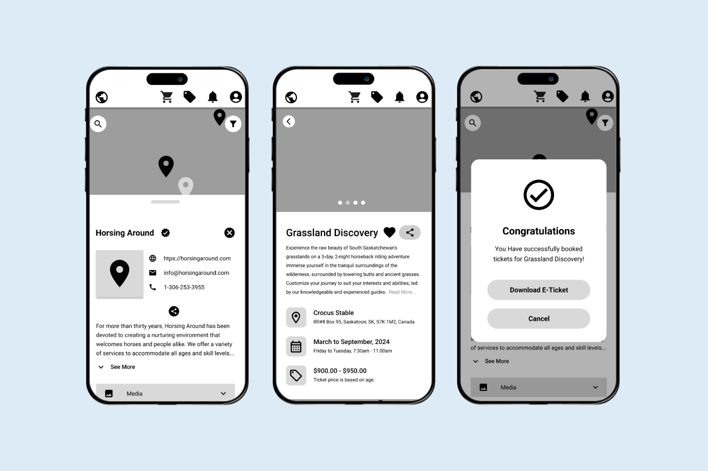
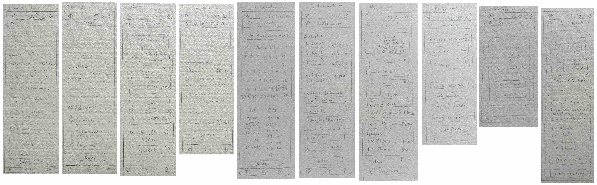
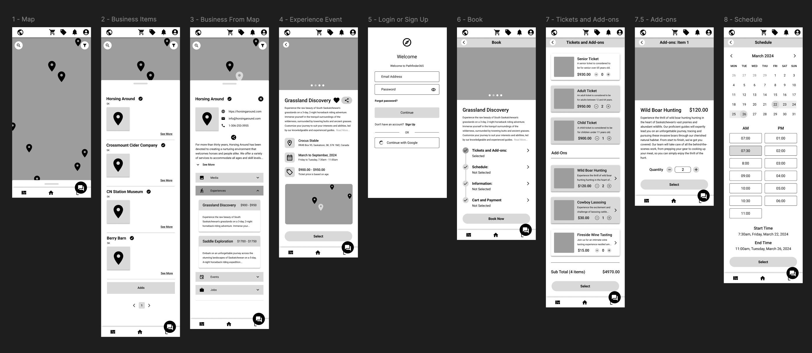
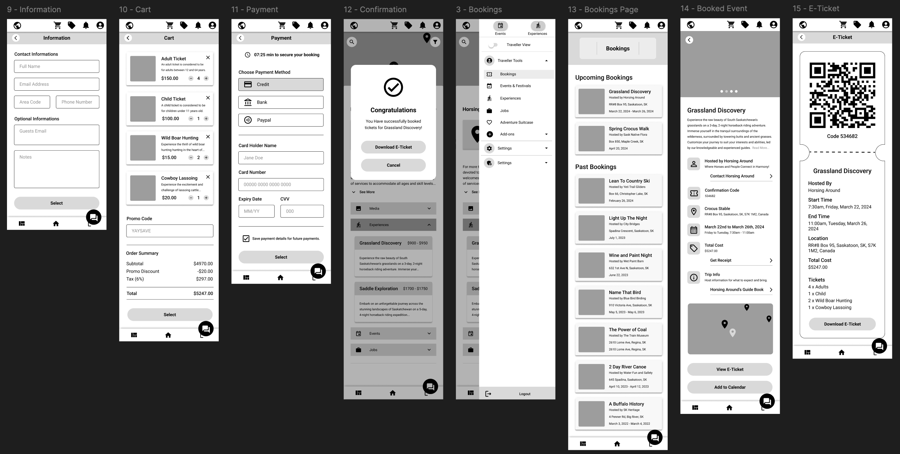
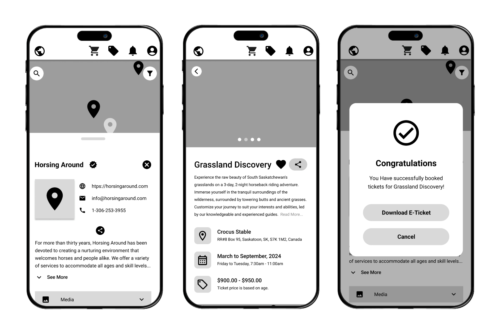

Product Design · UX/UI · Full-Stack Development · Tourism
Creating a custom booking experience from the ground up.

Pathfinder365 is a Saskatoon-based tourism startup focused on helping travellers discover local experiences. When I joined the team, there was no booking system. I researched existing tourism booking platforms, explored how a booking experience could fit into the existing website, sketched concepts, presented them to the team, translated the selected direction into Figma, and contributed to the technical planning and development of the system.
Role
Product Developer · UX/UI Designer
Company
Pathfinder365
Timeline
September 2023 – April 2024
Team
Focus
UX Research · Product Design · Booking Systems · Full-Stack Development
Tools
MFigma · Visual Studio Code
Technologies
TypeScript · Vue.js · Python · FastAPI · SQLAlchemy · Alembic · Docker · Quasar Framework · SQL
I worked across research, product design, technical planning, and development, specifically:
How might we create a booking experience for a tourism platform when no booking system exists yet?
Pathfinder365 needed a way for travellers to move from discovering a tourism experience to completing a reservation.
The system also needed to support the different booking requirements of tourism businesses, including availability, capacity, add-ons, ticket types, payments, cancellations, and rescheduling. The challenge was to create a simple booking experience for travellers while building a flexible product architecture that could support different tourism businesses.
I began by reviewing the existing Pathfinder365 platform and researching established tourism booking services, including Checkfront, Peek Pro, and FareHarbor. I compared their booking flows, information architecture, availability, inventory, add-ons, checkout, cancellation, and rescheduling.
I also explored how booking could fit naturally within Pathfinder365 rather than feeling like a separate product.
Simple experience, complex system
The traveller-facing experience needed to remain straightforward while supporting a flexible underlying system.
Different businesses, different inventory
Tourism businesses may need to manage everything from staff and equipment to activity capacity and multi-day reservations.
Booking should feel integrated
The experience needed to connect naturally to discovery, allowing travellers to move from finding an activity to reserving it without unnecessary friction.
What This Meant
The booking system needed to hide operational complexity from travellers while giving businesses the flexibility to manage different experiences and inventory.
To better understand the different needs, goals, and behaviours of Pathfinder365’s users, I created personas representing four key user groups: serious travellers, casual travellers, singular business owners, and varied business owners.
These personas helped build empathy for the people using the platform and provided a reference point throughout the design process. They also helped identify the different requirements the booking system would need to support across both travellers and tourism businesses.
I conducted walkthroughs by stepping through the platform from the perspective of each persona, considering their goals, needs, and potential pain points.
I reviewed key traveller, business, and admin workflows across both desktop and mobile layouts. This helped identify usability issues, inconsistencies, responsive design problems, and areas where the interface could better communicate what users could do next.
The walkthroughs resulted in a series of design recommendations that informed subsequent iterations of the product.
Because the booking system was being created from scratch, I considered the underlying product architecture alongside the interface. This included how experiences, availability, reservations, travellers, add-ons, payments, and business payouts would work together, as well as how temporary booking holds could work during checkout.
I used sketches to explore the overall booking experience and where it should fit within the existing website.

The resulting flow became:
Experience → Add-ons → Schedule → Information → Suggestions → Checkout → Confirmation
I presented early concepts to the team, discussed different approaches, and incorporated feedback into the selected direction. The concepts were then translated into detailed Figma designs.
I developed the selected direction in Figma, refining the booking flow, page layouts, information hierarchy, scheduling, add-ons, traveller information, checkout, confirmation, and reservation management.


Once the booking flow and initial layouts were established, I translated the selected direction into a detailed clickable prototype.
The prototype connected the key steps of the booking experience, allowing the team to review the flow as an interactive experience rather than as individual screens. I used it to refine navigation, information hierarchy, interactions, and the overall progression from discovering an experience through to completing a booking.
The clickable prototype also provided a shared reference point for discussing the design with the team and identifying areas that needed further refinement before development.
The process moved between research, competitive analysis, sketching, team review, Figma, technical planning, and development.
Because the booking system was being built from scratch, the interface and underlying architecture evolved together, with UX decisions influencing the data model, APIs, availability logic, and development requirements.

The final design created a custom booking experience that guided travellers from discovering an experience through scheduling, add-ons, traveller information, payment, confirmation, and reservation management.
The interface kept the booking process straightforward while the underlying architecture supported the operational needs of different tourism businesses. I contributed to the full-stack implementation, translating the Figma designs into a working product while considering the technical requirements and architecture needed to support the experience.
This project strengthened my understanding of how UX, product strategy, and development influence one another. Working on the booking system from its earliest stages allowed me to move from research and exploration through design, technical planning, and implementation.
With additional development and user feedback, I would continue refining the booking flow and validating the experience with both travellers and tourism operators.